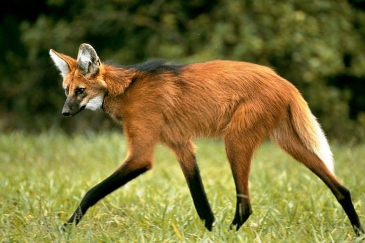
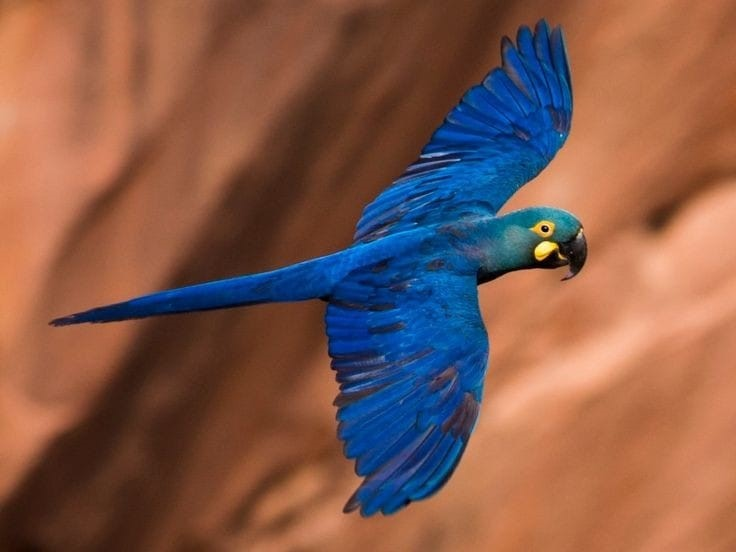
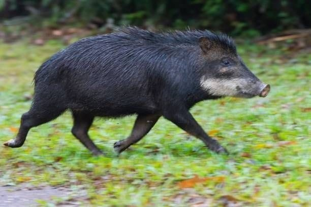
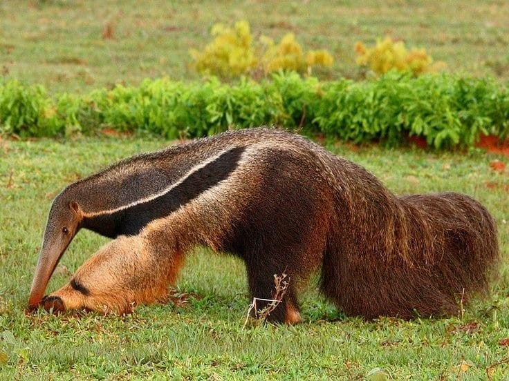

O BIOMA DO CERRADO
O Cerrado é o segundo maior bioma do Brasil, ocupando cerca de 25% do território nacional, especialmente no Planalto Central e em estados como Goiás, Mato Grosso do Sul, Minas Gerais e outros. Reconhecido por sua rica biodiversidade, abriga mais de 6 mil espécies de árvores e 800 espécies de aves, com muitas espécies endêmicas. O clima tropical da região é marcado por uma estação seca de cinco meses e uma estação chuvosa, com precipitações variando entre 750 e 2000 mm por ano.
SAIBA MAISFauna
-

Lobo-guará
Conhecido por sua pelagem avermelhada e pernas longas, é um dos maiores canídeos da América do Sul.
-

Arara-azul
Com seu plumagem vibrante, é uma ave icônica do cerrado.
-

Queixada
Um porco-do-mato que vive em bandos e é importante para a dispersão de sementes.
-

Tamanduá
Facilmente reconhecido pelo seu focinho longo e língua extensível, é um especialista em formigas e cupins.
Flora